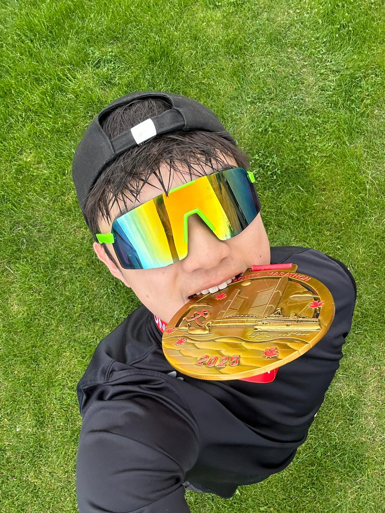
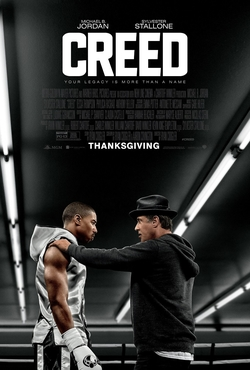

About
I’m a student at the University of Toronto, double majoring in Data Science and Statistics. Most of what I work on is machine learning and data analysis in Python, and I’m especially into sports and mapping.
In summer 2026, I did my Developmental Period 1 in Halifax, Nova Scotia, training as a Signal Operator with the Canadian Armed Forces Reserves: setting up and troubleshooting communications equipment.
I’m working toward a career in data & sports analytics, while continuing to develop my skills in statistics, programming, and GIS. Away from my laptop, I enjoy running, following sports, and exploring new places.
ML & data
- Python
- pandas
- scikit-learn
- YOLO & Roboflow
- OpenCV
- Weights & Biases
Stats & analysis
- R & RStudio
- SQL
- Excel
- ArcGIS
Still learning: Java, Power BI, Tableau, and GIS methods, through coursework and independent practice.


Nguyen
- PYT
- 98
- GIS
- 83
- STA
- 83
- RST
- 81
- SQL
- 80
- XLS
- 95
Experience
-

Deep Learning Perception Analyst
I build and evaluate training data for the cone-detection model on UTFR’s driverless race car, and run experiments on how input resolution affects classification.
More on this
- Data labelling
- Annotate cone images in Roboflow and audit bounding boxes and class labels for consistency before training.
- Experiments
- Design input-resolution experiments to measure how image size affects cone-classification accuracy.
- Training runs
- Run classifier training on the Nibi GPU cluster through SLURM and track validation metrics in Weights & Biases.
-

Signal Operator
I set up, operate, and troubleshoot field communications equipment with 32 Signal Regiment, helping teams stay connected during training.
More on this
- System operation
- Operated and troubleshot 20+ radio and data systems in time-sensitive environments.
- Communications setup
- Helped establish field communications setups using multiple equipment categories, including radios, antennas, and power equipment.
- Troubleshooting
- Diagnosed and resolved communication issues involving frequencies, equipment configuration, and connectivity.
-

Mobile Developer Intern
Built mobile interfaces and connected application data for an AI-powered monitoring dashboard.
More on this
- Mobile interface development
- Developed 20+ Flutter screens for an AI-powered monitoring dashboard, translating product requirements into functional mobile interfaces.
- API integration
- Integrated GraphQL APIs into the Flutter application to exchange data between the mobile client and backend.
Projects
-
PULP
A financial resilience planner that stress-tests a bank account against life’s shocks and builds a plan to follow. Built with a team of four for the Sheridan Datathon 2026.
Python · pandas · FastAPI · React · Gemini agents
-
PlayerMatch
Interpretable NBA player similarity, archetypes, and next-season forecasts. Researched statistical methods for similarity and forecasting, and learned how to pick and justify the right model for the question. Models are chosen with expanding-window validation against a baseline, with a model card and research paper.
Python · scikit-learn · Ridge regression · PCA · K-means
-
NorthStar
A Toronto crime-data map that compares routes by geographic risk. Integrated public APIs and worked hands-on with the City of Toronto’s open data.
Next.js · React · public APIs · Toronto open data
-
Pablo
A presentation coach that reads your gestures, posture, and head movement. Built the tracking with OpenCV, which sparked my interest in computer vision and led me to UofT Formula Racing. Won a challenge at QHacks 2025.
Python · OpenCV · MediaPipe · Streamlit

Side Quests
-
42.2km
Running
I ran the Spring Toronto Marathon, all 42.2 km of it. The medal tasted about how you’d expect.

-
Hide& seek
Executive Events Director, UofT Hide & Seek
Yes, it’s a real club. I plan our campus scavenger races, down to the QR checkpoints and scoring, and we play games from SCRAM: real-life hide and seek where runners hide, hunters chase on foot, and the app sends the pings. It’s exactly as fun as it sounds. Find us on Instagram at @uoft.hidenseek.
A real round of SCRAM. Clip: scramhideandseek.com -
Chess
Always up for a game
Find me on Lichess. I’m always sacrificing the rook! It could go either way.

Thumbnail: GothamChess -
Couchtime
Movies & shows
Lately: Project Hail Mary, Marty Supreme, Fullmetal Alchemist: Brotherhood, Attack on Titan, Bleach: TYBW, Creed, and a Prison Break rewatch.



Say hi
- Emailmartin.nguyxn@gmail.com
- LinkedInin/martinguyen
- GitHubmtnnguyen
- ResumeMartin-Nguyen-Resume.pdf